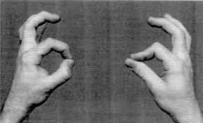
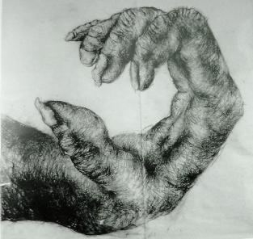
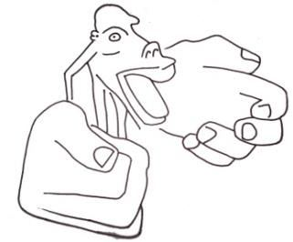

A humans is capable of precision grip, which requires the tips of the thumb and the next two fingers to come together in order to hold small objects, such as a paintbrush or a pen. This grip demands that the fingers be proportionate and that the joint at the base of the thumb be of a special saddle-shaped variety.
একজন মানুষ সূক্ষ্ম গ্রিপ করতে সক্ষম, যার জন্য একটি পেইন্টব্রাশ বা কলমের মতো ছোট জিনিসগুলিকে ধরে রাখার জন্য বুড়ো আঙুলের টিপস এবং পরবর্তী দুটি আঙ্গুলকে একত্রিত করতে হবে। এই গ্রিপটি আঙ্গুলগুলি সমানুপাতিক এবং বুড়ো আঙুলের গোড়ার জয়েন্টটি একটি বিশেষ স্যাডল-আকৃতির হওয়া দাবি করে।
FIGURE 24.46: Precision Grip

চিত্র 24_46 / Figure 24_46
চিত্র 24.46: যথার্থ গ্রিপ
চিত্র 24_46 / Figure 24_46
The hands of apes and monkeys are not suited for a precision grip. Fossil evidence also shows that the hands of Neanderthals were not adapted for this type of grip. ―The details of their (Neanderthals) hand bones, however, suggest greater emphasis on power than precision grip. – The New Encyclopedia Britannica. FIGURE 24.47: Hand of Chimpanzee

চিত্র 24_47 / Figure 24_47
বানর এবং বানরের হাত একটি নির্ভুল ধরার জন্য উপযুক্ত নয়। জীবাশ্ম প্রমাণও দেখায় যে নিয়ান্ডারথালদের হাত এই ধরণের দখলের জন্য অভিযোজিত ছিল না। - তাদের (নিয়ান্ডারথালদের) হাতের হাড়ের বিশদ বিবরণ, তবে, স্পষ্টতা ধরার চেয়ে শক্তির উপর বেশি জোর দেওয়ার পরামর্শ দেয়। - দ্য নিউ এনসাইক্লোপিডিয়া ব্রিটানিকা। চিত্র 24.47: শিম্পাঞ্জির হাত
চিত্র 24_47 / Figure 24_47
Our hands, however, are well-suited for a precision grip. This allows us to hold a pen for writing or a brush for painting.
আমাদের হাত, তবে, একটি নির্ভুল গ্রিপ জন্য ভাল উপযুক্ত. এটি আমাদের লেখার জন্য একটি কলম বা পেইন্টিংয়ের জন্য একটি ব্রাশ ধরে রাখতে দেয়।
FIGURE 24.48: Precision Grip

চিত্র 24_48 / Figure 24_48
চিত্র 24.48: যথার্থ গ্রিপ
চিত্র 24_48 / Figure 24_48
Therefore, humans have the ability to write down acquired knowledge, passing it on to future generations.
অতএব, মানুষের অর্জিত জ্ঞান লিখে রাখার ক্ষমতা রয়েছে, তা ভবিষ্যত প্রজন্মের কাছে প্রেরণ করা।
6c. Capability to Speak
6 গ. কথা বলার ক্ষমতা
―He has created man. He has taught him to talk‖ [Al Quran 55: 3–4] We have the capability to speak because the face of Adam was designed to enable speech. Our speech is coordinated by innumerable nerves, far more than those of other animals. And, we possess fully developed languages. Unlike apes, a large part of the human brain is dedicated to controlling the mouth and hands. If the size of body parts reflected the corresponding amount of brain tissue, a human would look like the picture below.
- তিনি মানুষকে সৃষ্টি করেছেন। তিনি তাকে কথা বলতে শিখিয়েছেন” [আল কোরান 55: 3-4] আমাদের কথা বলার ক্ষমতা আছে কারণ আদমের চেহারা কথা বলার জন্য তৈরি করা হয়েছিল। আমাদের বক্তৃতা অসংখ্য স্নায়ু দ্বারা সমন্বিত হয়, অন্যান্য প্রাণীদের তুলনায় অনেক বেশি। এবং, আমাদের সম্পূর্ণ উন্নত ভাষা আছে। বনমানুষের বিপরীতে, মানুষের মস্তিষ্কের একটি বড় অংশ মুখ ও হাত নিয়ন্ত্রণের জন্য নিবেদিত। যদি শরীরের অঙ্গগুলির আকার মস্তিষ্কের টিস্যুর অনুরূপ পরিমাণকে প্রতিফলিত করে তবে একজন মানুষ নীচের ছবির মতো দেখতে পাবে।
FIGURE 24.49: Human in Nerve Ratio

চিত্র 24_49 / Figure 24_49
চিত্র 24.49: স্নায়ু অনুপাতে মানুষ
চিত্র 24_49 / Figure 24_49
Adam's body was made lighter, and his skin was made soft. His descendants, therefore, had no choice but to rely on their brains to survive on Earth.
আদমের শরীরকে হালকা করা হয়েছিল, এবং তার চামড়া নরম করা হয়েছিল। তাই তার বংশধরদের পৃথিবীতে বেঁচে থাকার জন্য তাদের মস্তিষ্কের উপর নির্ভর করা ছাড়া কোন উপায় ছিল না।
6d. A Creation from the Noble Pair (DNA Double Helix)
6d. নোবেল পেয়ার থেকে একটি সৃষ্টি (ডিএনএ ডাবল হেলিক্স)
Adam and Eve were created separately in Jannaat, but with the same double helix DNA molecule that is used to create earthly creatures.
আদম এবং হাওয়াকে জান্নাতে আলাদাভাবে তৈরি করা হয়েছিল, কিন্তু একই ডাবল হেলিক্স ডিএনএ অণু দিয়ে যা পার্থিব প্রাণী তৈরি করতে ব্যবহৃত হয়।
―Glory to Allah Who created all things that the earth produces as well as their own kind and things of which they have no knowledge, from Pairs (DNA Double Helix)‖ [Al Quran 36:36]
"আল্লাহর মহিমা যিনি পৃথিবী থেকে যা কিছু উৎপন্ন করে, সেইসাথে তাদের নিজস্ব ধরণের এবং যা সম্পর্কে তাদের কোন জ্ঞান নেই, জোড়া থেকে সৃষ্টি করেছেন (ডিএনএ ডাবল হেলিক্স)" [আল কুরআন 36:36]
According to the above verse, all plants, animals, and humans are created from the same double helix DNA molecule. When Allah decided to create humans, rather than creating a completely new set of DNA, He likely took a set of DNA from an ape-like creature and incorporated human qualities into the code. Most probably, He used the DNA from the latest ape species, Homo Neanderthalensis. With this restructured genome, He created Adam in Jannaat. Eve was then created from Adam‘s genome, taken from his rib. We had to have similar DNA to be suited for life on Earth. Only creatures with DNA can be part of our ecosystem or produce our food (as synthetic food is not healthy for us).
উপরের আয়াত অনুসারে, সমস্ত উদ্ভিদ, প্রাণী এবং মানুষ একই ডাবল হেলিক্স ডিএনএ অণু থেকে সৃষ্টি হয়েছে। আল্লাহ যখন ডিএনএ-র সম্পূর্ণ নতুন সেট তৈরি না করে মানুষ তৈরি করার সিদ্ধান্ত নেন, তখন তিনি সম্ভবত বানরের মতো প্রাণী থেকে ডিএনএর একটি সেট নিয়েছিলেন এবং মানবিক গুণাবলীকে কোডে অন্তর্ভুক্ত করেছিলেন। খুব সম্ভবত, তিনি সর্বশেষ এপ প্রজাতি, হোমো নিয়ান্ডারথালেনসিস থেকে ডিএনএ ব্যবহার করেছিলেন। এই পুনর্গঠিত জিনোম দিয়ে তিনি আদমকে জান্নাতে সৃষ্টি করেন। ইভ তখন আদমের জিনোম থেকে তৈরি হয়েছিল, তার পাঁজর থেকে নেওয়া হয়েছিল। পৃথিবীতে জীবনের জন্য উপযোগী হওয়ার জন্য আমাদের অনুরূপ ডিএনএ থাকতে হবে। শুধুমাত্র ডিএনএ সহ প্রাণীই আমাদের বাস্তুতন্ত্রের অংশ হতে পারে বা আমাদের খাদ্য তৈরি করতে পারে (যেহেতু কৃত্রিম খাদ্য আমাদের জন্য স্বাস্থ্যকর নয়)।
―So, set thou thy face steadily and truly to the Faith. God's handiwork—according to the pattern (DNA Double Helix) on which He has made mankind—no change in the work by God; that is the established system; but most among mankind understand not.‖ [Al Quran 30:30]
-অতএব, আপনি অবিচলিতভাবে এবং সত্যই বিশ্বাসের দিকে মুখ করুন। ঈশ্বরের হস্তকর্ম- প্যাটার্ন অনুসারে (ডিএনএ ডাবল হেলিক্স) যার উপর তিনি মানবজাতিকে তৈরি করেছেন- ঈশ্বরের কাজের কোন পরিবর্তন নেই; এটাই প্রতিষ্ঠিত ব্যবস্থা; কিন্তু মানুষের অধিকাংশই বোঝে না।'' [আল কুরআন 30:30]
But, a person who would not turn his face toward faith will deform his soul (nafs) and become nothing more than an improved ape in the afterlife. However, he will still be counted as human and will be punished for the sins of his earthly life. 7. Summary
কিন্তু, যে ব্যক্তি ঈমানের দিকে মুখ ফিরিয়ে নেবে না সে তার আত্মাকে (নফস) বিকৃত করবে এবং পরবর্তী জীবনে উন্নত বানর ছাড়া আর কিছুই হবে না। যাইহোক, তাকে এখনও মানুষ হিসাবে গণ্য করা হবে এবং তার পার্থিব জীবনের পাপের জন্য শাস্তি দেওয়া হবে। 7. সারাংশ
The Quran supports the idea of biological evolution, except in the case of humans. Human beings do not fit into the evolutionary chain.
কুরআন জৈবিক বিবর্তনের ধারণাকে সমর্থন করে, মানুষের ক্ষেত্রে ছাড়া। মানুষ বিবর্তনীয় শৃঙ্খলে খাপ খায় না।
8. Conclusion
8. উপসংহার
Allah created Adam with an extraordinarily advanced brain, hands, and mouth. Human beings are not a result of biological evolution, though they are created from the same pairs (DNA double helix).
আল্লাহ আদমকে অসাধারণ উন্নত মস্তিষ্ক, হাত ও মুখ দিয়ে সৃষ্টি করেছেন। মানুষ জৈবিক বিবর্তনের ফল নয়, যদিও তারা একই জোড়া (ডিএনএ ডাবল হেলিক্স) থেকে সৃষ্টি হয়েছে।
―Verily in the skies and lands are sings for those who believe. And in the creation of yourselves and the fact that animals are scattered are signs for those of assured faith.‖ [Al Quran 45: 3–4]
- নিশ্চয়ই আসমান ও জমিনে বিশ্বাসীদের জন্য গান গাওয়া হয়। আর তোমাদের সৃষ্টিতে এবং প্রাণীদের বিক্ষিপ্ত হওয়ার বিষয়টি নিশ্চিত বিশ্বাসীদের জন্য নিদর্শন।'' [আল কুরআন ৪৫:৩-৪]
But only the Believers will benefit from the signs. Others will fail to conceive them:
তবে নিদর্শন থেকে কেবল মুমিনরাই উপকৃত হবে। অন্যরা তাদের ধারণা করতে ব্যর্থ হবে:
―Those whom God wills to guide, He opens their breast to Islam; those whom He wills to leave straying, He makes their breast close and constricted, as if they had to climb up to the Skies. Thus, does God (heap) the penalty on those who refuse to believe.‖ [Al Quran 6:125]
-আল্লাহ যাদেরকে হেদায়েত দিতে চান, ইসলামের জন্য তাদের বক্ষ খুলে দেন; তিনি যাকে পথভ্রষ্ট করতে চান, তিনি তাদের বক্ষকে এমনভাবে সংকুচিত করে দেন, যেন তারা আকাশে উঠতে হবে। সুতরাং, যারা বিশ্বাস করতে অস্বীকার করে তাদের উপর আল্লাহ কি শাস্তি (স্তূপ) দেন।'' [আল কুরআন 6:125]
'Refusal to believe' comes first, and then God constricts the heart. Thereafter, they develop as unbelievers; even if they were great scientists traveling through space in high- tech spaceships, they would not believe. ―Even if We opened out to them a gate (portal) from the Sky and they were to continue ascending therein, they would only say: Our eyes have been intoxicated, nay, we have been bewitched by sorcery.‖ [Al Quran 15: 14-15]
'বিশ্বাস করতে অস্বীকার' প্রথমে আসে, এবং তারপর ঈশ্বর হৃদয়কে সংকুচিত করেন। তারপরে, তারা অবিশ্বাসী হিসাবে গড়ে ওঠে; এমনকি তারা যদি উচ্চ প্রযুক্তির মহাকাশযানে মহাকাশ ভ্রমণকারী মহান বিজ্ঞানীও হন, তারা বিশ্বাস করবেন না। "যদিও আমি তাদের জন্য আকাশ থেকে একটি দরজা (পোর্টাল) খুলে দেই এবং তারা তাতে আরোহণ করতে থাকে, তবে তারা কেবল বলবে: আমাদের চোখ মাতাল হয়েছে, বরং আমরা যাদু দ্বারা মুগ্ধ হয়েছি।" [আল কুরআন 15: 14-15]
Therefore, accepting True Faith is very important. But Allah will not compel anyone to believe. He is the owner of both universes, the Samawaat (this universe) and the Jannaat (another universe). He has a plan to appoint His vicegerents (humans) in the objects of the universes. Those who have True Faith will be shifted into the Jannaat, and those who refuse to believe will remain in the Samawaat. The objects of the Samawaat (galaxies) are the objects of Hell.
অতএব, সত্য বিশ্বাস গ্রহণ করা অত্যন্ত গুরুত্বপূর্ণ। কিন্তু আল্লাহ কাউকে বিশ্বাস করতে বাধ্য করবেন না। তিনি সামওয়াত (এই মহাবিশ্ব) এবং জান্নাত (অন্য মহাবিশ্ব) উভয় মহাবিশ্বের মালিক। মহাবিশ্বের বস্তুতে তার ভাইসজার (মানুষ) নিয়োগ করার পরিকল্পনা রয়েছে তার। যারা সত্য বিশ্বাসী তারা জান্নাতে স্থানান্তরিত হবে এবং যারা বিশ্বাস করতে অস্বীকার করবে তারা সামাওয়াতে থাকবে। সামওয়াতের বস্তু (গ্যালাক্সি) নরকের বস্তু।
―Many are the Jinns and men we have made for Hell. They have hearts wherewith they understand not, eyes wherewith they see not, and ears wherewith they hear not. They are like cattle, nay, more misguided—for they are heedless.‖ [Al Quran 7:179]
- অনেক জ্বীন ও মানুষকে আমরা জাহান্নামের জন্য বানিয়েছি। তাদের হৃদয় আছে যা দিয়ে তারা বোঝে না, চোখ আছে যা দিয়ে তারা দেখে না এবং কান আছে যা দিয়ে তারা শোনে না। তারা চতুষ্পদ জন্তুর মত, বরং আরো বিপথগামী-কারণ তারা গাফিল।” [আল কুরআন 7:179]